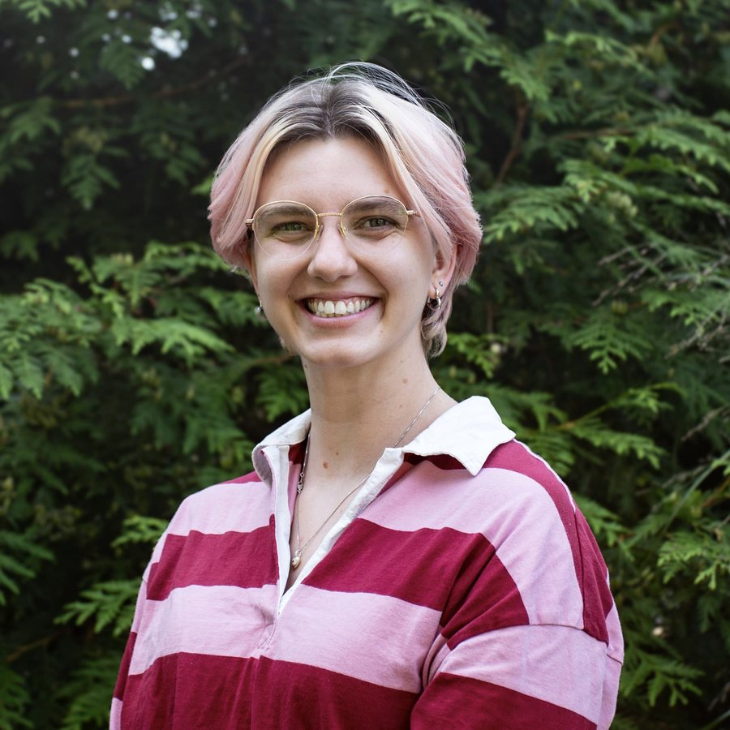

Hannah McCalmon
PhD Candidate, Cell & Molecular Biology / Murthy Lab, Harvard University
I study how sensory representations are maintained and reshaped by experience. My work uses olfaction, longitudinal two-photon imaging, and behavior to examine how neural representations evolve with learning and over time.

 About
About
I am a PhD candidate in the Molecules, Cells and Organisms program at Harvard, working with Venkatesh Murthy. My dissertation, supported by an NIH F31 fellowship, examines the stability of odor representations in the olfactory tubercle, a region where sensory information and learned value converge.
Before Harvard I studied biology at Wake Forest, where my honors thesis traced the development of chemoreception in earthworms, and spent an NSF REU at the University of Washington building an anatomical atlas of octopus neural tissue.
 Research
Research
Representational drift in the olfactory tubercle
Tracking the same neurons across weeks of odor learning to ask how sensory representations change over time, including after behavior has stabilized.
Continual learning of new odors
Examining how learning new odors affects existing representations, and whether new information is integrated without disrupting what has already been learned.
Odor discrimination in complex mixtures
Studying how sparse sensory representations allow mice to discriminate odors in complex, concentration-varying mixtures. Cell Reports 2026
Electronic nose
Building an electronic nose on the combinatorial coding principles of biological olfaction, using patterns of activity across an array of broadly responsive sensors rather than chemical-specific ones.
Earlier work
My undergraduate research examined the development of chemoreceptive behaviors in earthworms. I later worked on a micro-CT anatomical atlas of the octopus nervous system, and on image segmentation to track arm movement from video.